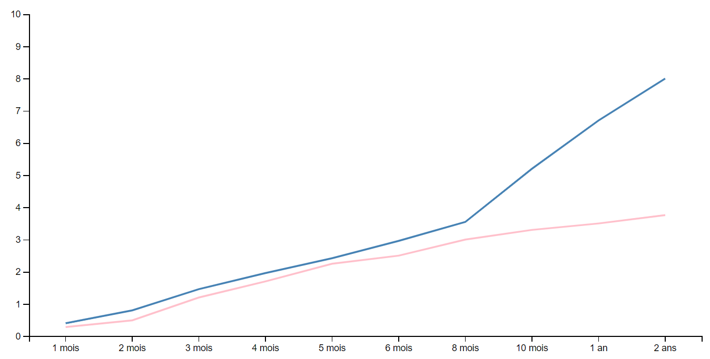

Graphique du poids des Ragdolls
Poids pour un mâle
Poids pour un femelle
La croissance du Ragdolls se fait au long de ses deux premières années, donc après ses 2ans votre Ragdoll doit se strabiliser.
Poids pour un mâle
Poids pour un femelle
La croissance du Ragdolls se fait au long de ses deux premières années, donc après ses 2ans votre Ragdoll doit se strabiliser.